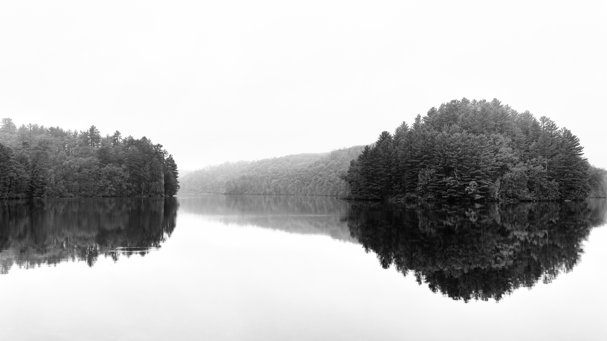

Parks in Southwest Wisconsin
Explore state, county, and local parks available for recreation.
Awesome Hikes
Explore available hiking trails and their length, terrain difficulty, and accessibility.
Activities by Season
In Wisconsin, you can get outside and be active in any weather. Get ideas for your next outdoor adventure here.
Featured Content
There are 27 state parks, forests, and trails to discover in Southwest Wisconsin that offer space for people to bike, kayak, canoe, fish, cross-country ski, hike, swim, and so much more! Check out a local favorite, Governor Dodge State Park, that has over 5,000 acres, 2 lakes, and a waterfall for the public to discover and enjoy.

Discover Nature Cost-Free
Discover parks that don’t require a state park pass or fee to enter.
Free Parks